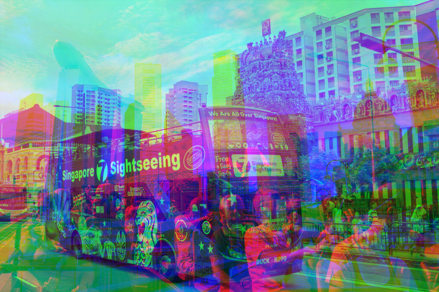
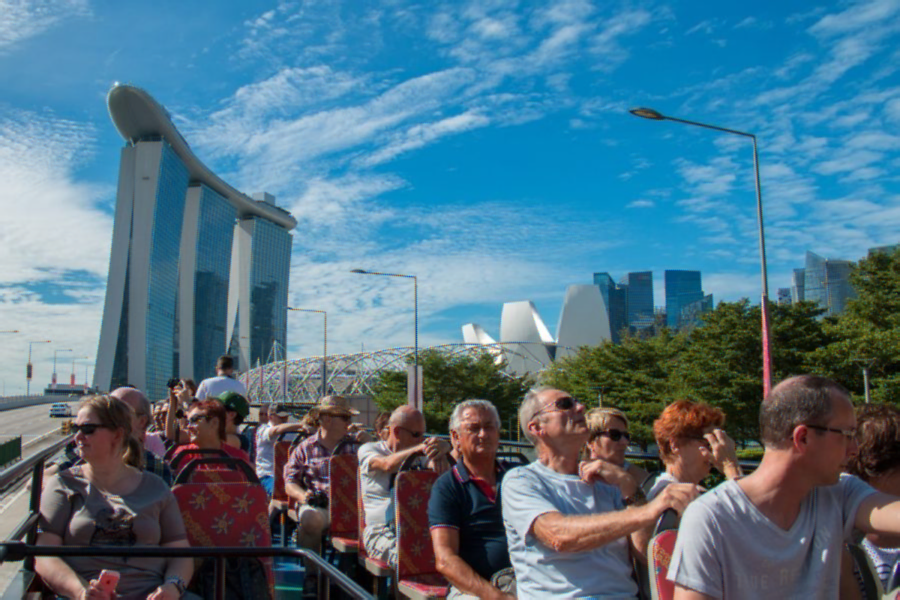
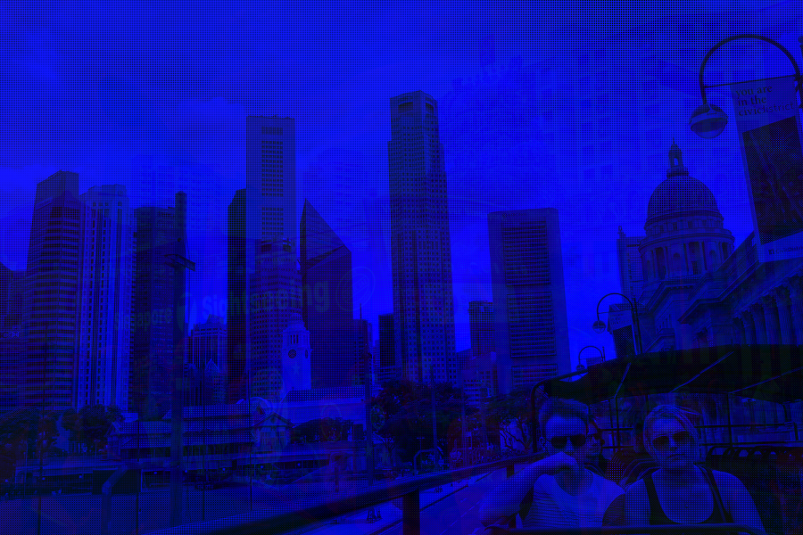

"Steganography [...] is the practice of concealing a file, message, image, or video within another file, message, image, or video."
Wikipedia
In this project I explore different algorithms for image steganography. The goal is to understand different types of approaches, their pros and cons and their applicative scenarios.
- Code Image: Image to hide
- Cover Image: Image used to hide the code image
- Stego Image: Cover image with the code image embedded
We can create a stego image from 3 images, by using one channel from each image. In this case each of the 3 images acts as cover image and code image at
the same time.
Cover Images/Code Images:
This method is obviously not very smart if your goal is to hide an image within another image.
- We can only recover one channel from each image, essentially losing the color information.
- We can discern the different images visually.
For the first problem, we can use the
Bayer pattern (BG). Instead of storing one whole channel of an image,
we store multiple channel of an image at specific location, giving us the following grid:

When we reconstruct an image, we just have to interpolate the missing colors.
Stego Image:

Reconstruction:

For the second problem, we can somewhat solve it by adding weights to each channel of the stego image:
Stego Image:

Two Images are now hidden inside the R and G channel with 0.1 as weight respectively making the stego image blue. It's hard to discern the hidden images visually, but we get
a single colored stego image, which does attract curiosity.